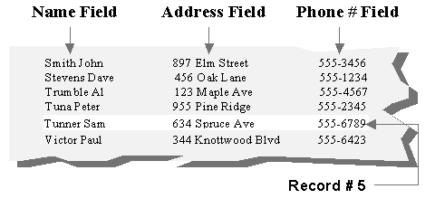

If you are not familiar with the concept
of a database, simply think of it as a collection of information
which has been organized in a logical manner. The most common example
of a database is a telephone directory. It contains the names, phone numbers,
and addresses of thousands of people. Each listing in the phone book corresponds
to one record, and each piece of information in the record corresponds
to one field. The phone book excerpt below illustrates this concept.

Figure 1.1 Phone Book Example
As shown in this example, each data file (also known as a table) is a collection of one or more fields (also known as a tuple). Each of these fields has a set of characteristics that determine the size and type of data to be stored. Collectively, these field descriptions make up the structure of your data file.
CodeBase File Format |
CodeBase uses the industry standard .DBF data files. This standard allows for several types of fixed width fields and one type of variable length field. |
Fields |
The .DBF standard uses four attributes to describe each field. These attributes are Name, Type, Length, and Decimal. They are listed below. For detailed information on field attributes, please refer to the FIELD4INFO structure as described in the CodeBase Reference Guide under d4create. · Name: This simply refers to the name that will be used to identify the field. Each field name can be a maximum of 10 characters, and each field name must be unique within a data file and must consist of alphanumeric or underscore characters. The first letter of the name must be a letter. · Type: The type of the field determines what kind of information should be stored in the field. There are eight different types that can be specified for any given field. They are Character, Numeric, Floating Point, Date, Logical, Memo, Binary and General. · Length: This attribute refers to the number of characters or digits that can be stored in the field. · Decimal: This attribute applies only to Numeric and Floating Point fields. It specifies the number of digits after the decimal point. |
Records |
A record consists of one instance of every field, and has a unique record number and a deletion flag associated with it. The record number indicates the physical position in the data file while the deletion flag is used during the deletion process. The deletion flag is set to true (non-zero) to indicate that the record should be removed from the data file when the data file is packed. |
Tags |
A tag determines the ordering in which the records in a data file are presented. The tag ordering does not affect the physical ordering of the records in the data file, only the order in which they can be accessed. The information that this ordering is based upon is called the index key. In the phone book example, the index key is based on the Name field and the actual index keys for records 1 to 3 are "Smith John", "Stevens Dave", and "Trumble Al". If you wanted to display the phone information sorted by the phone number, you would create a tag based on the phone number field. |
Indexes |
An index is a file containing the sorted index keys for one or more tags. There are several formats of index files which CodeBase supports. · ".MDX" (dBASE IV) · ".NTX" (Clipper) · ".CDX" (FoxPro) The ".CDX" and ".MDX" allow you to have multiple tags in each index file, and to have production indexes. A production index is an index file that is opened automatically when the associated data file is opened. The ".NTX" format limits you to one tag per index file, and does not allow for production indexes. CodeBase does, however, provide this functionality through the use of group files. Refer to the "Indexing" chapter for more details on index file formats. |
Filters |
Filters are used to obtain a subset of the available data file records. The subset is based on true/false conditions calculated from data file field information. Only records that pass through the filter have entries in the tag. This allows for fast access to a data subset. Refer to the "Indexing" chapter for details on using filters. |
Relations |
A relation is a connection between two or more data files. A relation determines how records in related data files can be found from a record in the current data file. Refer to the "Queries And Relations" chapter for details on relations. |